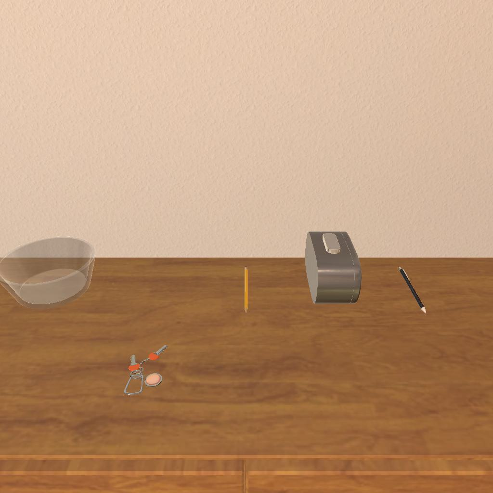

---------------------------------------------------------task: 0---------------------------------------------------------
--------------------------------------------------------------------------------------------------------------------------------------------------------------------
--------------------------------------------------------------------------------------------------------------------------------------------------------------------
Step:--------------------------------------------------------------------------11-------------------------------------------------------------------------------
----------------------------------------
VLM Prompt:
Image1:
**Instruction**
1. Analyze the provided image to identify all visible household objects, focusing on those relevant to the task description "examine the alarmclock with the desklamp."
2. Use the analysis of the image and the task hint "The agent must find an object of the desired type, locate and turn on a light source with the desired object in-hand." to answer the question: what is the most reasonable action in the choices for the task description "examine the alarmclock with the desklamp"?
4. Decide and write the answer using the template: The answer is: (i): , where i is the real number. If there is no desired object in the image, search every place based on **Initial Observation** to find the object. And if no one is exactly correct, choose a similar answer.
**Initial Observation**
You are in the middle of a room. Looking quickly around you, you can see bed (1), sidetable (1), drawer (1-11), dresser (1), safe (1), laundryhamper (1), garbagecan (1)
**Answer Choices**
(1): go to bed 1
(2): go to drawer 1
(3): go to drawer 2
(4): go to drawer 3
(5): go to drawer 4
(6): go to drawer 5
(7): go to drawer 6
(8): go to drawer 7
(9): go to drawer 8
(10): go to drawer 9
(11): go to drawer 10
(12): go to drawer 11
(13): go to safe 1
(14): go to laundryhamper 1
(15): go to garbagecan 1
(16): take bowl 1 from dresser 1
(17): take alarmclock 1 from dresser 1
(18): take keychain 1 from dresser 1
(19): take pen 1 from dresser 1
(20): take pencil 2 from dresser 1
(21): examine dresser 1
**Answer**
Let's think step by step by following the instructions.
----------------------------------------
----------------------------------------
Original Response:
The task is to "examine the alarmclock with the desklamp." So, we need to find an alarm clock and a desk lamp.
From the image provided, we can see a bowl, a pencil, a pen, and what looks like a keychain on the dresser. There is no alarm clock or desk lamp visible in the image.
Based on the initial observation, we can search different places to find these objects. Since the dresser is mentioned in both the task description and the initial observation, it is likely that the alarm clock is on the dresser. However, the image does not show a desklamp on the dresser, so we may need to search for it elsewhere.
Considering the available answer choices, the most reasonable action would be to take the alarm clock from the dresser, as it is explicitly mentioned in the choices and is relevant to the task description.
The answer is: (17): take alarmclock 1 from dresser 1.
----------------------------------------
----------------------------------------
>>> Refine Original VLM Response and Get Pure Action: take alarmclock 1 from dresser 1
----------------------------------------
-----------------------------------------------------------------
Running time: 12.904744625091553 seconds
Total Money: 0.21302
-----------------------------------------------------------------
-----------------------------------------------------------------
Text Observation:You pick up the alarmclock 1 from the dresser 1.
-----------------------------------------------------------------
UNSUCCEED